set.seed(6)
heights <- rnorm(100000, mean = 163, sd = 6.5)
height_hist <- function(n_obs, bin_width, title)
ggplot(data.frame(height = heights[1:n_obs]), aes(height)) +
geom_histogram(binwidth = bin_width, fill = "#2c4a6e",
colour = "white", alpha = 0.8) +
labs(title = title, x = "Height (cm)", y = "") + theme_minimal()Statistics
Chapter 6: The Normal Distribution
Yu-You Liou
Shih Chien University
2026-09-20
Overview
Chapter 6 introduces the normal distribution and its role in statistical inference.
| Section | Topics |
|---|---|
| 6-1 | Normal and standard normal distributions; areas under the curve |
| 6-2 | Applications; data values from given probabilities; normality |
| 6-3 | Central limit theorem; sample means; finite population correction |
| 6-4 | Normal approximation to the binomial distribution |
Chapter Objectives
After completing this chapter, you should be able to
- Identify the properties of a normal distribution.
- Identify distributions as symmetric or skewed.
- Find the area under the standard normal distribution, given various z values.
- Find probabilities for a normally distributed variable by transforming it into a standard normal variable.
- Find specific data values for given percentages, using the standard normal distribution.
- Use the central limit theorem to solve problems involving sample means for large samples.
- Use the normal approximation to compute probabilities for a binomial variable.
Section 6-1: Normal Distributions
Introduction
Random variables can be discrete or continuous. Chapter 5 dealt with discrete variables; a continuous variable can assume all values between any two given values — heights of adult men, body temperatures of rats, cholesterol levels of adults.
Many continuous variables have bell-shaped distributions and are called approximately normally distributed variables. If a researcher measures the heights of 100 adult women and draws a histogram, then keeps increasing the sample size while decreasing the class width, the histogram approaches a smooth curve called a normal distribution curve (Figure 6-1). It is also called a bell curve or a Gaussian distribution curve, after Carl Friedrich Gauss (1777–1855).
No variable fits a normal distribution perfectly, because a normal distribution is a theoretical distribution. It is nevertheless useful because the deviations from it are very small.
Introduction
Figure 6-1 Histograms and normal model for the distribution of heights of adult women
Introduction
normal_panel <- ggplot(data.frame(height = c(140, 186)), aes(height)) +
stat_function(fun = dnorm, args = list(mean = 163, sd = 6.5),
colour = "#2c4a6e", linewidth = 1.2) +
labs(title = "(d) Normal distribution", x = "Height (cm)", y = "") +
theme_minimal()
grid.arrange(height_hist(100, 5, "(a) n = 100"),
height_hist(1000, 3, "(b) larger n"),
height_hist(20000, 1, "(c) larger n still"),
normal_panel, ncol = 2)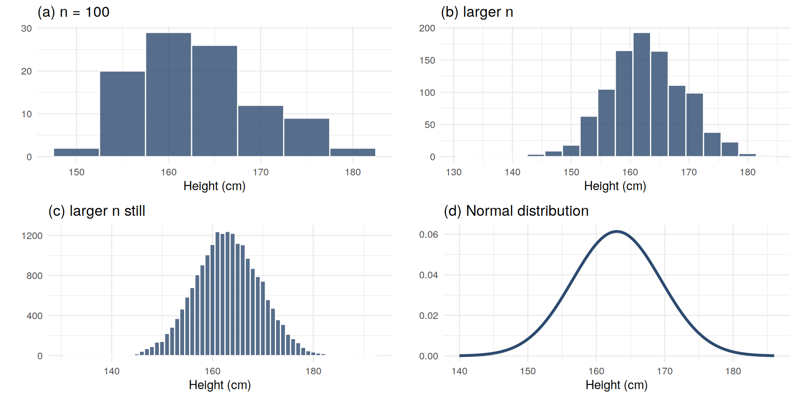
Normal Distributions
Normal Distribution
If a random variable has a probability distribution whose graph is continuous, bell-shaped, and symmetric, it is called a normal distribution. The graph is called a normal distribution curve.
The mathematical equation for a normal distribution is
y = \frac{e^{-(X-\mu)^2/(2\sigma^2)}}{\sigma\sqrt{2\pi}}
where e \approx 2.718, \pi \approx 3.14, \mu is the population mean and \sigma is the population standard deviation. In applied statistics, tables or technology are used instead of the equation.
Shapes of Normal Distributions
The shape and position of a normal distribution curve depend on two parameters: the mean and the standard deviation (Figure 6-3).
normal_curve_df <- function(mu, sigma, label) {
x <- seq(-8, 10, length.out = 400)
data.frame(x = x, density = dnorm(x, mu, sigma), label = label)
}
same_mean <- rbind(normal_curve_df(0, 1, "mu = 0, sigma = 1"),
normal_curve_df(0, 2, "mu = 0, sigma = 2"))
same_sd <- rbind(normal_curve_df(0, 2, "mu = 0, sigma = 2"),
normal_curve_df(2, 2, "mu = 2, sigma = 2"))
shape_panel <- function(curves, title)
ggplot(curves, aes(x, density, colour = label)) + geom_line(linewidth = 1) +
labs(title = title, x = "x", y = "", colour = "") +
theme_minimal() + theme(legend.position = "bottom")
grid.arrange(
shape_panel(same_mean, "(a) Same means, different standard deviations"),
shape_panel(same_sd, "(b) Different means, same standard deviations"),
ncol = 2)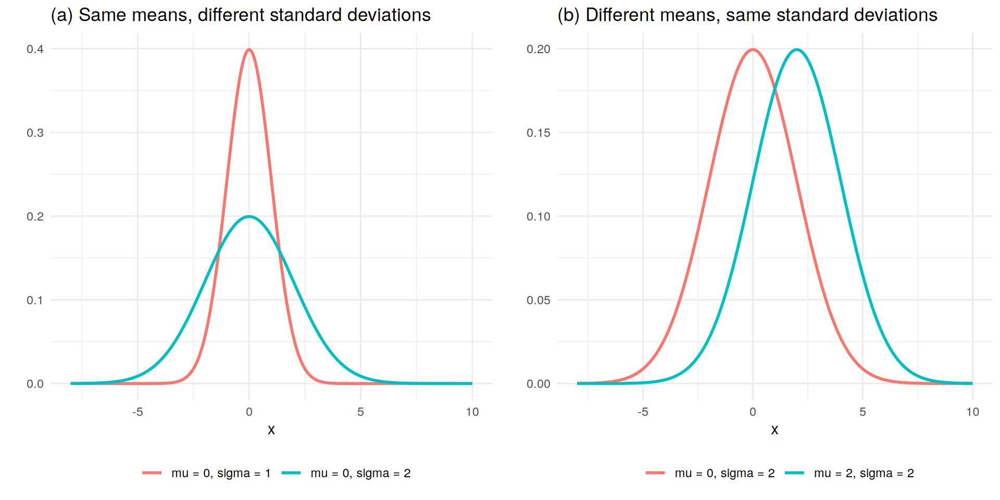
Properties of a Normal Distribution
Summary of the Properties of the Theoretical Normal Distribution
- A normal distribution curve is bell-shaped.
- The mean, median, and mode are equal and are located at the center of the distribution.
- A normal distribution curve is unimodal (it has only one mode).
- The curve is symmetric about the mean; its shape is the same on both sides of a vertical line through the center.
- The curve is continuous: there are no gaps or holes. For each value of X there is a corresponding value of Y.
- The curve never touches the x axis, no matter how far it extends in either direction — but it gets increasingly close.
- The total area under a normal distribution curve is equal to 1.00, or 100\%.
- The area within 1 standard deviation of the mean is about 0.68, within 2 standard deviations about 0.95, and within 3 standard deviations about 0.997.
Areas Under a Normal Distribution Curve
Figure 6-4 — the areas in item 8 follow the empirical rule of Section 3-2.
z_grid <- seq(-4, 4, length.out = 800)
normal_curve <- data.frame(z = z_grid, density = dnorm(z_grid))
shade <- function(lower, upper, fill)
geom_area(data = filter(normal_curve, z >= lower, z <= upper),
fill = fill, alpha = 0.6)
ggplot(normal_curve, aes(z, density)) +
shade(-1, 1, "#2c4a6e") + shade(1, 2, "#5b8bbd") + shade(-2, -1, "#5b8bbd") +
shade(2, 3, "#a9c6e0") + shade(-3, -2, "#a9c6e0") +
geom_line(linewidth = 1) +
annotate("text", x = c(-0.5, 0.5), y = 0.15, label = "34.13%") +
annotate("text", x = c(-1.5, 1.5), y = 0.05, label = "13.59%") +
annotate("text", x = c(-2.5, 2.5), y = 0.02, label = "2.15%") +
scale_x_continuous(breaks = -3:3) +
labs(title = "About 68%, 95% and 99.7% within 1, 2 and 3 sigma",
x = "z", y = "") + theme_minimal()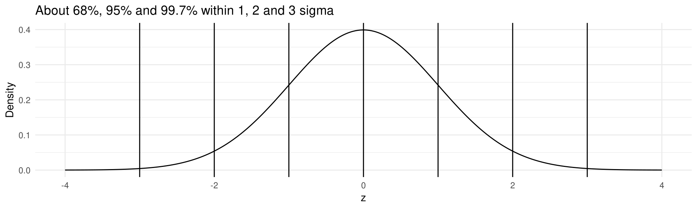
Symmetric and Skewed Distributions
Symmetric and Skewed Distributions
- When the data values are evenly distributed about the mean, the distribution is a symmetric distribution. A normal distribution is symmetric.
- When the majority of the data values fall to the right of the mean, the distribution is negatively or left-skewed: the mean is to the left of the median, and both are to the left of the mode.
- When the majority of the data values fall to the left of the mean, the distribution is positively or right-skewed: the mean falls to the right of the median, and both fall to the right of the mode.
The “tail” of the curve indicates the direction of the skewness (right is positive, left is negative).
Symmetric and Skewed Distributions
Figure 6-5 Normal and skewed distributions
skewed_panel <- function(shape, title, mirror = FALSE) {
x <- seq(0.001, 12, length.out = 400)
density <- dgamma(x, shape = shape, rate = 1)
if (mirror) x <- max(x) - x
ggplot(data.frame(x, density), aes(x, density)) +
geom_line(colour = "#2c4a6e", linewidth = 1) +
labs(title = title, x = "x", y = "") + theme_minimal()
}
symmetric_panel <- ggplot(normal_curve, aes(z, density)) +
geom_line(colour = "#2c4a6e", linewidth = 1) +
labs(title = "(a) Normal", x = "x", y = "") + theme_minimal()
grid.arrange(symmetric_panel, skewed_panel(3, "(b) Negatively skewed", TRUE),
skewed_panel(3, "(c) Positively skewed"), ncol = 3)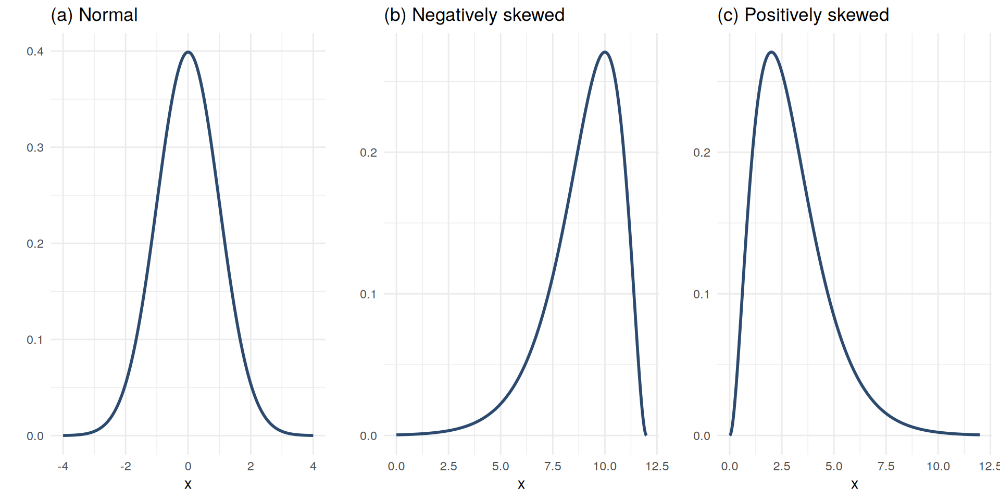
The Standard Normal Distribution
Each normally distributed variable has its own mean and standard deviation, so a separate table of areas would be needed for every variable. To simplify this, statisticians use the standard normal distribution.
Standard Normal Distribution
The standard normal distribution is a normal distribution with a mean of 0 and a standard deviation of 1.
The equation for the standard normal distribution is
y = \frac{e^{-z^2/2}}{\sqrt{2\pi}}
The Standard Score
Formula for the z Score (Standard Score)
z = \frac{\text{value} - \text{mean}}{\text{standard deviation}} \qquad\text{or}\qquad z = \frac{X - \mu}{\sigma}
- This is the same formula used in Section 3-3.
- Once the X values are transformed, they are called z values. The z value (or z score) is the number of standard deviations a particular X value is away from the mean.
- Table A-4 in Appendix A gives the area (to four decimal places) under the standard normal curve for any z value from -3.49 to 3.49.
The Standard Normal Distribution
Figure 6-6 Standard normal distribution
ggplot(normal_curve, aes(z, density)) +
geom_area(fill = "#2c4a6e", alpha = 0.15) +
geom_line(colour = "#2c4a6e", linewidth = 1.2) +
geom_vline(xintercept = -3:3, linetype = "dotted", colour = "grey40") +
scale_x_continuous(breaks = -3:3) +
labs(title = "Standard normal distribution (mean 0, standard deviation 1)",
x = "z", y = "Density") + theme_minimal()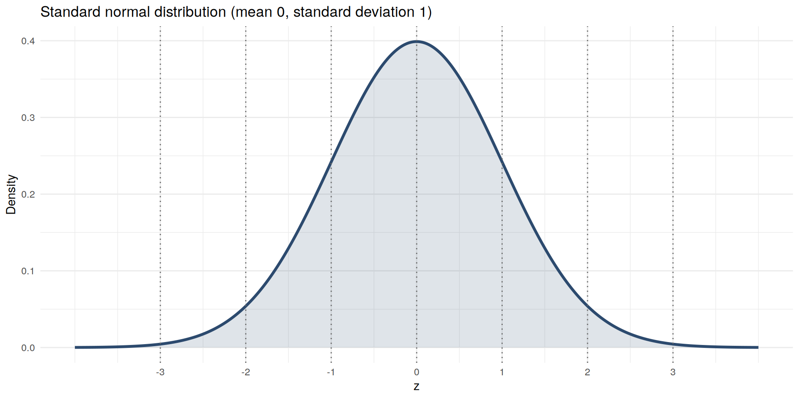
Finding Areas Under the Standard Normal Distribution Curve
A two-step process is recommended:
Step 1 Draw the normal distribution curve and shade the area.
Step 2 Find the appropriate figure in the Procedure Table and follow the directions given.
Procedure Table — Finding the Area Under the Standard Normal Distribution Curve
- To the left of any z value: look up the z value in the table and use the area given.
- To the right of any z value: look up the z value and subtract the area from 1.
- Between any two z values: look up both z values and subtract the corresponding areas.
There are three basic types of problems, and all three are summarized in the Procedure Table.
Standard Normal Areas in R
This course uses R instead of Table A-4. The three cases of the Procedure Table become three R expressions.
Key R Functions
pnorm(z)— area to the left of z1 - pnorm(z)orpnorm(z, lower.tail = FALSE)— area to the right of zpnorm(z2) - pnorm(z1)— area between z_1 and z_2qnorm(p)— the z value whose left-tail area is p (the inverse ofpnorm)
Example 6-1
Area to the Left of a z Value
Find the area under the standard normal distribution curve to the left of z = 1.72.
Example 6-1
Example 6-1
Solution
Draw figure
ggplot(normal_curve, aes(z, density)) +
geom_area(data = filter(normal_curve, z <= 1.72),
fill = "#2c4a6e", alpha = 0.4) +
geom_line(linewidth = 1) +
geom_vline(xintercept = 1.72, linetype = "dashed", colour = "red") +
annotate("text", x = 0, y = 0.15, label = "0.9573", size = 5) +
labs(title = "Area to the left of z = 1.72", x = "z", y = "") +
theme_minimal()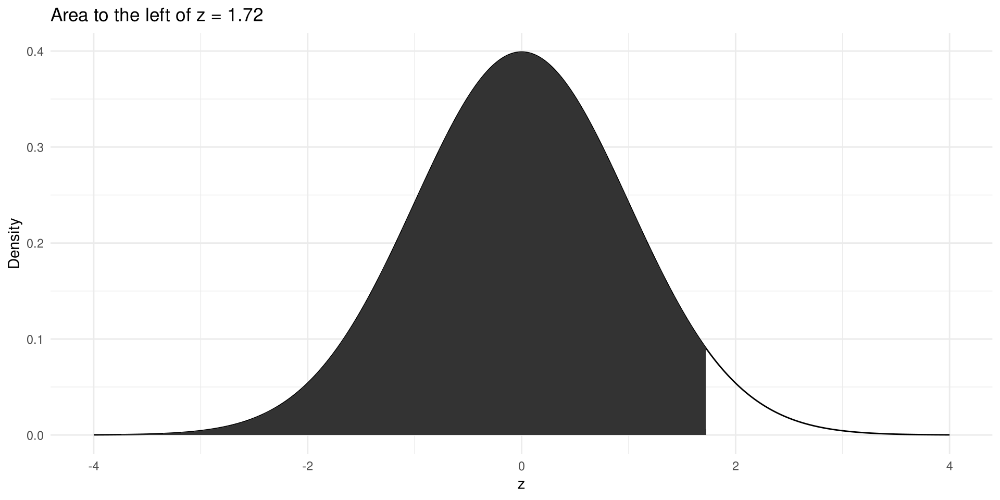
Example 6-2
Area to the Right of a z Value
Find the area under the standard normal distribution curve to the right of z = -0.83.
Example 6-2
Solution
Step 1 Draw the figure and shade the desired area (Figure 6-9).
Step 2 This is the second case. The area for z = -0.83 is 0.2033. Subtract it from 1.0000: 1.0000 - 0.2033 = 0.7967. Hence, 79.67\% of the area lies to the right of z = -0.83.
Example 6-2
Solution
Draw figure
ggplot(normal_curve, aes(z, density)) +
geom_area(data = filter(normal_curve, z >= -0.83),
fill = "#2c4a6e", alpha = 0.4) +
geom_line(linewidth = 1) +
geom_vline(xintercept = -0.83, linetype = "dashed", colour = "red") +
annotate("text", x = 1, y = 0.15, label = "0.7967", size = 5) +
labs(title = "Area to the right of z = -0.83", x = "z", y = "") +
theme_minimal()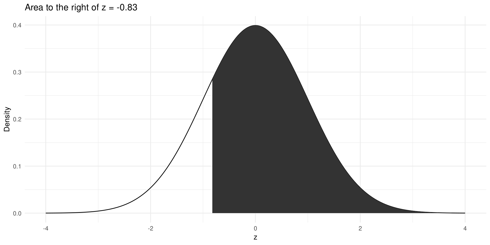
Example 6-3
Area Between Two z Values
Find the area under the standard normal distribution curve between z = 1.21 and z = -1.54.
Example 6-3
Solution
Step 1 Draw the figure (Figure 6-10). The desired area lies between the two z values.
Step 2 This is the third case: look up both areas and subtract the smaller from the larger. (Do not subtract the z values.) The area for z = 1.21 is 0.8869 and the area for z = -1.54 is 0.0618, so the area between them is 0.8869 - 0.0618 = 0.8251, or 82.51\%.
Example 6-3
Solution
Draw figure
ggplot(normal_curve, aes(z, density)) +
geom_area(data = filter(normal_curve, z >= -1.54, z <= 1.21),
fill = "#2c4a6e", alpha = 0.4) +
geom_line(linewidth = 1) +
geom_vline(xintercept = c(-1.54, 1.21), linetype = "dashed",
colour = "red") +
annotate("text", x = 0, y = 0.15, label = "0.8251", size = 5) +
labs(title = "Area between z = -1.54 and z = 1.21", x = "z", y = "") +
theme_minimal()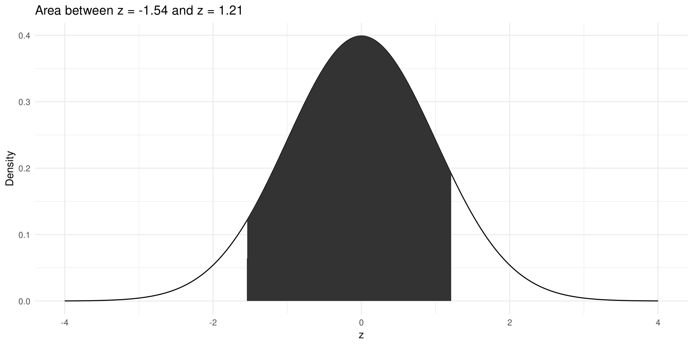
A Normal Distribution Curve as a Probability Distribution Curve
The area under the standard normal distribution curve can also be thought of as a probability, or as the proportion of the population with a given characteristic. If it were possible to select a z value at random, the probability of choosing one between 0 and 2.00 would be the same as the area under the curve between 0 and 2.00, namely 0.4772.
For probabilities, a special notation is used: the probability of a z value between 0 and 2.32 is written P(0 < z < 2.32).
Caution
In a continuous distribution the probability of any exact z value is 0, since the area would be a vertical line, which in theory has no area. Hence P(a \leq z \leq b) = P(a < z < b).
Example 6-4
Probabilities for the Standard Normal Distribution
Find the probability for each. (Assume this is a standard normal distribution.)
(a) P(0 < z < 2.14) (b) P(z < 1.35) (c) P(z > 2.27)
Example 6-4
Solution
(a) Find the area between z = 0 and z = 2.14. The area for z = 2.14 is 0.9838 and the area for z = 0 is 0.5000: 0.9838 - 0.5000 = 0.4838, or 48.38\%.
(b) Find the area to the left of z = 1.35. It is 0.9115, so the probability is 0.9115, or 91.15\%.
(c) Find the area to the right of z = 2.27. The area for z = 2.27 is 0.9884, so 1.0000 - 0.9884 = 0.0116, or 1.16\%.
Example 6-5
Finding a z Value for a Given Area
Find the z value such that the area under the standard normal distribution curve between 0 and the z value is 0.3078.
Example 6-5
Solution
Draw the figure (Figure 6-14). Since Table A-4 is cumulative, add 0.5000 to the given area of 0.3078 to get the cumulative area 0.8078. Looking up 0.8078 in Table A-4 gives a row value of 0.8 and a column value of 0.07, so z = 0.87.
If the exact area cannot be found in the table, use the closest value: for a cumulative area of 0.8080 the closest table area is 0.8078, which again gives z = 0.87.
Section 6-2: Applications of the Normal Distribution
Applications of the Normal Distribution
The standard normal distribution curve can be used to solve a wide variety of practical problems. The only requirement is that the variable be normally or approximately normally distributed. To solve such problems, transform the original variable to a standard normal variable:
z = \frac{\text{value} - \text{mean}}{\text{standard deviation}} \qquad\text{or}\qquad z = \frac{X - \mu}{\sigma}
Procedure Table — Finding the Area Under Any Normal Curve
Step 1 Draw a normal curve and shade the desired area.
Step 2 Convert the values of X to z values, using the formula z = \dfrac{X - \mu}{\sigma}.
Step 3 Find the corresponding area, using a table, calculator, or software.
In R the conversion is optional: pnorm(x, mean = mu, sd = sigma) works directly.
Example 6-6
Food Delivery Times
On a food-delivery platform operating in Taipei, the time from placing an order to delivery at the door averages 27 minutes. Assume the variable is normally distributed and has a standard deviation of 4 minutes. Find the percentage of deliveries that arrive in less than 32 minutes. (hypothetical data)
Example 6-6
Solution
Step 1 Draw a normal curve and shade the desired area (Figure 6-18).
Step 2 z = \dfrac{X - \mu}{\sigma} = \dfrac{32 - 27}{4} = \dfrac{5}{4} = 1.25
Step 3 The area to the left of z = 1.25 is 0.8944. Therefore 89.44\% of deliveries arrive in less than 32 minutes.
Example 6-6
Solution
Draw figure
normal_density_df <- function(mu, sigma) {
x <- seq(mu - 4 * sigma, mu + 4 * sigma, length.out = 400)
data.frame(x = x, density = dnorm(x, mu, sigma))
}
delivery_curve <- normal_density_df(delivery_mean, delivery_sd)
delivery_plot <- ggplot(delivery_curve, aes(x, density)) +
geom_area(data = filter(delivery_curve, x <= 32),
fill = "#2c4a6e", alpha = 0.4) +
geom_line(linewidth = 1) +
geom_vline(xintercept = 32, linetype = "dashed", colour = "red") +
annotate("text", x = 24, y = 0.03, label = "0.8944", size = 5) +
labs(title = "Delivery time: P(X < 32)", x = "Minutes", y = "") +
theme_minimal()Example 6-6
Example 6-7
Order Values on an E-Commerce Platform
Completed orders on a Taiwanese e-commerce platform have an average value of 1{,}200 NT dollars. Assume the variable is approximately normally distributed and the standard deviation is 150 NT dollars. If one completed order is selected at random, find the probability that its value is
(a) between 1{,}050 and 1{,}425 NT dollars; (b) more than 1{,}380 NT dollars. (hypothetical data)
Example 6-7
Solution (a)
Step 1 Draw a normal curve and shade the desired area (Figure 6-20).
Step 2 z_1 = \dfrac{1050 - 1200}{150} = -1.0 and z_2 = \dfrac{1425 - 1200}{150} = 1.5
Step 3 The area to the left of z_2 is 0.9332 and the area to the left of z_1 is 0.1587, so the area between them is 0.9332 - 0.1587 = 0.7745. The probability is 77.45\%.
Example 6-7
Solution (b)
Step 1 Draw a normal curve and shade the desired area (Figure 6-22).
Step 2 z = \dfrac{1380 - 1200}{150} = \dfrac{180}{150} = 1.2
Step 3 The area to the left of z = 1.2 is 0.8849, so the area to the right is 1.0000 - 0.8849 = 0.1151. The probability that an order is worth more than 1{,}380 NT dollars is 0.1151, or 11.51\%.
Example 6-7
Solution
Draw figure
order_curve <- normal_density_df(order_mean, order_sd)
between_plot <- ggplot(order_curve, aes(x, density)) +
geom_area(data = filter(order_curve, x >= 1050, x <= 1425),
fill = "#2c4a6e", alpha = 0.4) +
geom_line(linewidth = 1) +
labs(title = "(a) P(1050 < X < 1425) = 0.7745", x = "NT dollars", y = "") +
theme_minimal()
upper_plot <- ggplot(order_curve, aes(x, density)) +
geom_area(data = filter(order_curve, x >= 1380),
fill = "#c0392b", alpha = 0.4) +
geom_line(linewidth = 1) +
labs(title = "(b) P(X > 1380) = 0.1151", x = "NT dollars", y = "") +
theme_minimal()Example 6-7
Example 6-8
Order Picking Time
At a logistics centre in Taoyuan, the time needed to pick and pack one order averages 6.4 minutes. Assume the variable is approximately normally distributed and the population standard deviation is 0.8 minute. If 60 orders are randomly selected, approximately how many will be picked and packed in less than 5.8 minutes? (hypothetical data)
Example 6-8
Solution
Step 1 Draw a normal curve and shade the desired area (Figure 6-24).
Step 2 z = \dfrac{5.8 - 6.4}{0.8} = -0.75
Step 3 The area corresponding to z = -0.75 is 0.2266.
To find the number of orders, multiply 60 \times 0.2266 = 13.6 and round to 14. Approximately 14 of the 60 randomly selected orders are picked and packed in less than 5.8 minutes.
[1] 0.2266[1] 13.6Note: for problems using percentages, write the percentage as a decimal before multiplying, and round the answer to the nearest whole number.
Finding Data Values Given Specific Probabilities
A normal distribution can also be used to find specific data values for given percentages. Starting from z = \dfrac{X-\mu}{\sigma} and solving for X gives:
Formula for Finding the Value of a Normal Variable X
X = z \cdot \sigma + \mu
Procedure Table — Finding Data Values for Specific Probabilities
Step 1 Draw a normal curve and shade the desired area that represents the probability, proportion, or percentile.
Step 2 Find the z value from the table that corresponds to the desired area.
Step 3 Calculate the X value by using the formula X = z\sigma + \mu.
Example 6-9
Qualifying for a Rider Bonus
A delivery platform pays a quarterly bonus to the riders in the top 10\% by number of orders completed per month. Assume the number of orders completed is normally distributed with a mean of 480 and a standard deviation of 60. Find the lowest number of completed orders needed to qualify. (hypothetical data)
Example 6-9
Solution
Step 1 Work backward. Subtract 0.1000 from 1.0000 to get the area to the left of X: 1.0000 - 0.1000 = 0.9000 (Figure 6-26).
Step 2 Look up 0.9000 in the area portion of Table A-4. The table rounds the answer to z = 1.28; computed exactly, z = 1.2816.
Step 3 X = z \cdot \sigma + \mu = 1.2816(60) + 480 = 556.89.
Because a rider cannot complete a fraction of an order, 557 completed orders should be used as the cutoff: anybody completing 557 or more qualifies for the bonus.
Example 6-10
Daily Passengers at an MRT Station
A transport planner wishes to study the middle 60\% of weekdays at a Taipei MRT station. Assume the number of passengers entering the station on a weekday is normally distributed with a mean of 48 thousand and a standard deviation of 5 thousand.
(a) What is the passenger count for the lowest 20\% of weekdays?
(b) Find the lower and upper passenger counts for the middle 60\% of weekdays. (hypothetical data)
Example 6-10
Solution (a)
Step 1 Draw the curve and shade the lower 20\% (Figure 6-28).
Step 2 The z value with area 0.2000 to its left is z = -0.8416 (Table A-4 rounds it to -0.84).
Step 3 X = z\sigma + \mu = (-0.8416)(5) + 48 = 43.79
The quietest 20\% of weekdays have fewer than 43.79 thousand passengers.
Example 6-10
Solution (b)
Step 1 Two values are needed, one above and one below the mean (Figure 6-29).
Step 2 To get the area to the left of the positive z value, add 0.5000 + 0.3000 = 0.8000. The z value for a left-tail area of 0.8000 is 0.8416, and the z value for 0.2000 is -0.8416.
Step 3 X_1 = (-0.8416)(5) + 48 = 43.79 and X_2 = (0.8416)(5) + 48 = 52.21.
The middle 60\% of weekdays have between 43.79 and 52.21 thousand passengers.
Determining Normality
A bell-shaped distribution is only one of many shapes a distribution can assume, but it is very important since many statistical methods require the distribution of values to be normally or approximately normally shaped. Statisticians check normality in several ways.
Checking a Data Set for Normality
- Histogram. Draw a histogram and check its shape. If it is not approximately bell-shaped, the data are not normally distributed.
- Pearson coefficient (PC) of skewness, also called Pearson’s index of skewness: PC = \frac{3(\bar{X} - \text{median})}{s} If the index is greater than or equal to +1 or less than or equal to -1, the data are significantly skewed.
- Outliers. Check for outliers with the method of Chapter 3: a value more than 1.5(IQR) below Q_1 or above Q_3. Even one or two outliers can have a big effect on normality.
Example 6-11
Supplier Lead Times
A trading company recorded the number of days of finished-goods inventory held by each of 18 supplier factories. Determine if the data are approximately normally distributed. (hypothetical data)
12 21 26 33 35 38 42 45 47
49 52 56 59 63 68 74 81 93Example 6-11
Solution
Step 1 Construct a frequency distribution and draw a histogram (Figure 6-30).
lead_days <- c(12, 21, 26, 33, 35, 38, 42, 45, 47,
49, 52, 56, 59, 63, 68, 74, 81, 93)
lead_breaks <- seq(9.5, 99.5, by = 15)
lead_labels <- c("10-24", "25-39", "40-54", "55-69", "70-84", "85-99")
lead_freq <- data.frame(
Class = lead_labels,
Frequency = as.integer(table(cut(lead_days, lead_breaks, labels = lead_labels))))
knitr::kable(lead_freq, align = "c")| Class | Frequency |
|---|---|
| 10-24 | 2 |
| 25-39 | 4 |
| 40-54 | 5 |
| 55-69 | 4 |
| 70-84 | 2 |
| 85-99 | 1 |
Example 6-11
Solution
Draw figure
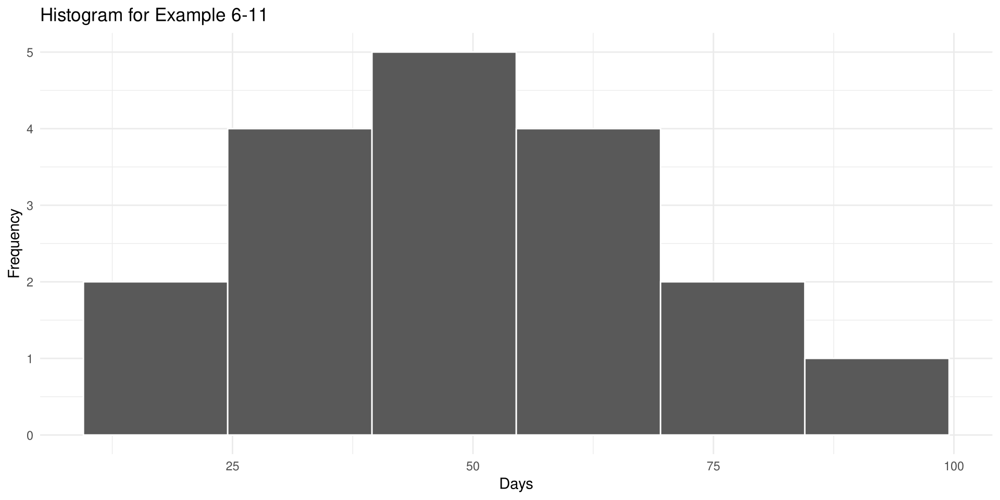
The histogram is approximately bell-shaped, so the distribution appears approximately normal.
Example 6-11
Solution
Step 2 Check for skewness: \bar{X} = 49.67, median = 48, s = 21.17, so PC = \frac{3(49.67 - 48)}{21.17} = 0.236 PC is not greater than +1 nor less than -1, so the distribution is not significantly skewed.
Example 6-11
Solution
Step 3 Check for outliers: Q_1 = 35.75 and Q_3 = 62, so IQR = 26.25. An outlier would be below 35.75 - 1.5(26.25) = -3.62 or above 62 + 1.5(26.25) = 101.38. There are no outliers.
mean median s
49.67 48.00 21.17 [1] 0.236 25% 75% IQR
35.75 62.00 26.25 25% 75%
-3.62 101.38 Bell-shaped, not significantly skewed, no outliers: the distribution is approximately normally distributed.
Example 6-12
Customers Served at a Night-Market Stall
The data shown are the numbers of customers served by a night-market stall on 17 randomly selected evenings. Determine if the data are approximately normally distributed. (hypothetical data)
142 95 131 152 108 145
149 25 139 118 151 135
125 60 147 78 42Example 6-12
Solution
Step 1 Construct a frequency distribution and draw a histogram (Figure 6-31).
customers <- c(142, 95, 131, 152, 108, 145,
149, 25, 139, 118, 151, 135,
125, 60, 147, 78, 42)
customer_breaks <- seq(24.5, 174.5, by = 25)
customer_labels <- c("25-49", "50-74", "75-99", "100-124", "125-149", "150-174")
customer_freq <- data.frame(
Class = customer_labels,
Frequency = as.integer(table(cut(customers, customer_breaks,
labels = customer_labels))))
knitr::kable(customer_freq, align = "c")| Class | Frequency |
|---|---|
| 25-49 | 2 |
| 50-74 | 1 |
| 75-99 | 2 |
| 100-124 | 2 |
| 125-149 | 8 |
| 150-174 | 2 |
Example 6-12
Solution
Draw figure
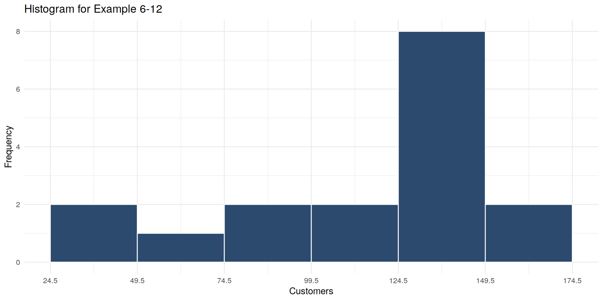
The histogram shows that the frequency distribution is negatively skewed.
Example 6-12
Solution
Step 2 Check for skewness: \bar{X} = 114.24, median = 131, s = 40.37, so PC = \frac{3(114.24 - 131)}{40.37} = -1.25 Since PC is less than -1, the distribution is significantly skewed to the left.
Example 6-12
Solution
Step 3 Check for outliers: Q_1 = 95, Q_3 = 145, IQR = 50. Any value below 95 - 1.5(50) = 20 or above 145 + 1.5(50) = 220 is an outlier. There are no outliers.
mean median s
114.24 131.00 40.37 [1] -1.2525% 75% IQR
95 145 50 25% 75%
20 220 In summary, the distribution is significantly negatively skewed.
Normal Quantile Plots in R
Another method used to check normality is to draw a normal quantile plot. Quantiles (sometimes called fractiles) are values that separate the data set into approximately equal groups. A normal quantile plot graphs the data values against the z values of the corresponding quantiles. If the points do not lie in an approximately straight line, normality can be rejected.
quantile_plot <- function(values, title)
ggplot(data.frame(values), aes(sample = values)) +
stat_qq(colour = "#2c4a6e") + stat_qq_line(colour = "red") +
labs(title = title, x = "Theoretical quantiles (z)",
y = "Sample quantiles") + theme_minimal()
grid.arrange(quantile_plot(lead_days, "Example 6-11: supplier lead times"),
quantile_plot(customers, "Example 6-12: customers served"), ncol = 2)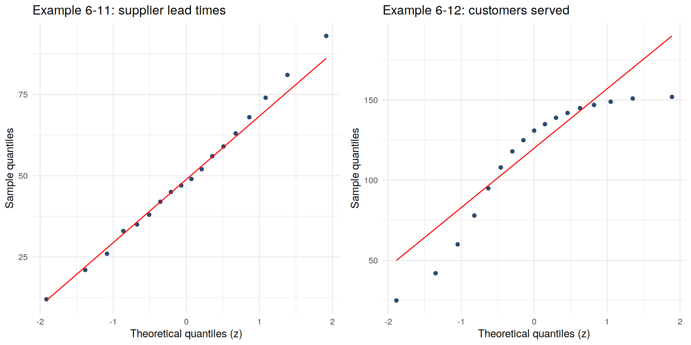
Other methods include normal probability graph paper, the chi-square goodness-of-fit test (Chapter 11), the Kolmogorov-Smirnov test and the Lilliefors test.
Section 6-3: The Central Limit Theorem
Distribution of Sample Means
In addition to knowing how individual data values vary about the mean for a population, statisticians want to know how the means of samples of the same size taken from the same population vary about the population mean.
Suppose an analyst selects a sample of 30 online orders and finds the mean order value to be 1{,}180 NT dollars, then selects a second sample with mean 1{,}215 NT dollars, and continues for 100 samples. The mean becomes a random variable, and the sample means 1{,}180, 1{,}215, 1{,}164, \ldots, 1{,}232 constitute a sampling distribution of sample means.
Sampling Distribution of Sample Means
A sampling distribution of sample means is a distribution using the means computed from all possible random samples of a specific size taken from a population.
Sampling Error
If the samples are randomly selected with replacement, the sample means will for the most part be somewhat different from the population mean \mu. These differences are caused by sampling error.
Sampling Error
Sampling error is the difference between the sample measure and the corresponding population measure, due to the fact that the sample is not a perfect representation of the population.
Properties of the Distribution of Sample Means
- The mean of the sample means will be the same as the population mean.
- The standard deviation of the sample means will be smaller than the standard deviation of the population, and it will be equal to the population standard deviation divided by the square root of the sample size.
A 10-Point Quiz Illustration
A lecturer gave a 10-point quiz to a small class of four students; the results were 3, 5, 7 and 9. Treat the four students as the population.
mean sd
6.000 2.236 The graph of the original distribution is a uniform distribution (Figure 6-32): each score occurs once.
A 10-Point Quiz Illustration
All samples of size 2 taken with replacement, and the mean of each sample:
A 10-Point Quiz Illustration
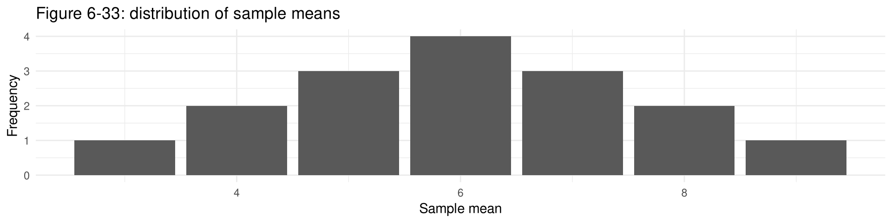
[1] 6[1] 1.581[1] 1.581The histogram of the sample means appears approximately normal, the mean of the sample means equals the population mean, and the standard deviation of the sample means equals \sigma/\sqrt{n}.
The Standard Error of the Mean
Standard Error of the Mean
If all possible samples of size n are taken with replacement from the same population, the mean of the sample means, denoted \mu_{\bar{X}}, equals the population mean \mu; and the standard deviation of the sample means, denoted \sigma_{\bar{X}}, equals \sigma/\sqrt{n}. The standard deviation of the sample means is called the standard error of the mean.
Mean and Standard Error of the Sample Means
\mu_{\bar{X}} = \mu \qquad\qquad \sigma_{\bar{X}} = \frac{\sigma}{\sqrt{n}}
The Central Limit Theorem
A third property of the sampling distribution of sample means concerns the shape of the distribution, and is explained by the central limit theorem.
The Central Limit Theorem
As the sample size n increases without limit, the shape of the distribution of the sample means taken with replacement from a population with mean \mu and standard deviation \sigma will approach a normal distribution. This distribution will have a mean \mu and a standard deviation \sigma/\sqrt{n}.
z Value for the Central Limit Theorem
z = \frac{\bar{X} - \mu}{\sigma/\sqrt{n}}
The denominator must be adjusted because means are used instead of individual data values; it is the standard deviation of the sample means.
Two Things to Remember
When the Central Limit Theorem Applies
- When the original variable is normally distributed, the distribution of the sample means will be normally distributed for any sample size n.
- When the distribution of the original variable is not normal, a sample size of 30 or more is needed to use a normal distribution to approximate the distribution of the sample means. The larger the sample, the better the approximation.
In R: use pnorm(xbar, mean = mu, sd = sigma / sqrt(n)).
The Central Limit Theorem in R
set.seed(42)
skewed_means <- function(n) # rate = 0.5 gives a skewed population
data.frame(sample_mean = colMeans(matrix(rexp(n * 2000, rate = 0.5), nrow = n)),
size = paste("n =", n))
simulation <- bind_rows(skewed_means(2), skewed_means(10), skewed_means(30))
ggplot(simulation, aes(sample_mean)) +
geom_histogram(bins = 40, fill = "#2c4a6e", colour = "white") +
facet_wrap(~ factor(size, levels = c("n = 2", "n = 10", "n = 30")),
scales = "free") +
labs(title = "Sample means approach normality as n increases",
x = "Sample mean", y = "Frequency") + theme_minimal()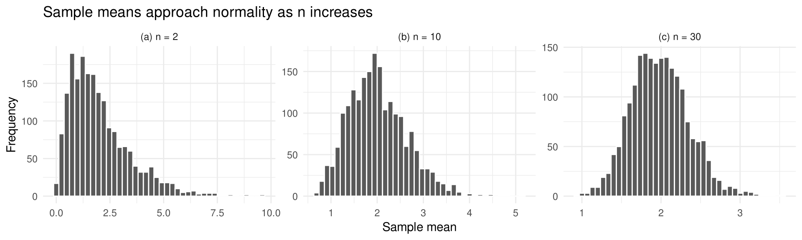
Example 6-13
Length of Customer-Service Calls
Calls handled by the customer-service centre of an online retailer last an average of 4.5 minutes. Assume the variable is normally distributed and the standard deviation is 1.25 minutes. If 25 calls are randomly selected, find the probability that their mean length will be greater than 5.0 minutes. (hypothetical data)
Example 6-13
Solution
Since the variable is approximately normally distributed, the distribution of sample means is approximately normal with a mean of 4.5 and standard error
\sigma_{\bar{X}} = \frac{\sigma}{\sqrt{n}} = \frac{1.25}{\sqrt{25}} = 0.25
Step 1 Draw a normal curve and shade the desired area (Figure 6-35).
Step 2 z = \dfrac{\bar{X} - \mu}{\sigma/\sqrt{n}} = \dfrac{5.0 - 4.5}{0.25} = 2.00
Step 3 The area to the right of 2.00 is 1.0000 - 0.9772 = 0.0228, or 2.28\%.
[1] 0.25[1] 0.0228The probability that the 25 calls last more than 5.0 minutes on average is 2.28%.
Example 6-14
Parcels Delivered per Van
A courier company’s vans deliver an average of 120 parcels per day. Assume the standard deviation is 18 parcels. If a random sample of 36 van-days is selected, find the probability that the sample mean is between 114 and 123 parcels. (hypothetical data)
Example 6-14
Solution
Step 1 Draw a normal curve and shade the desired area (Figure 6-36). Since the sample is 30 or more, the normality assumption is not necessary.
Step 2 The standard error is 18/\sqrt{36} = 3, so z_1 = \dfrac{114 - 120}{3} = -2 and z_2 = \dfrac{123 - 120}{3} = 1.
Step 3 The area for z = -2 is 0.0228 and the area for z = 1 is 0.8413, so the area between them is 0.8413 - 0.0228 = 0.8186, or 81.86\%.
Example 6-15
Customs Clearance Time
Imported shipments arriving at a Taiwanese port clear customs in an average of 3.2 days. Assume the distribution is approximately normal and has a standard deviation of 0.5 day.
(a) Find the probability that one randomly selected shipment clears customs in fewer than 3.3 days.
(b) If a sample of 36 shipments is randomly selected, find the probability that the mean clearance time of the sample is less than 3.3 days. (hypothetical data)
Example 6-15
Solution (a)
Since the question concerns an individual shipment, use z = \dfrac{X - \mu}{\sigma} (Figure 6-37).
Step 2 z = \dfrac{3.3 - 3.2}{0.5} = 0.20
Step 3 The area to the left of z = 0.20 is 0.5793.
The probability of selecting a shipment that clears customs in fewer than 3.3 days is 0.5793, or 57.93\%.
Example 6-15
Solution (b)
Since the question concerns the mean of a sample of size 36, use the central limit theorem formula z = \dfrac{\bar{X} - \mu}{\sigma/\sqrt{n}} (Figure 6-38).
Step 2 z = \dfrac{3.3 - 3.2}{0.5/\sqrt{36}} = 1.20
Step 3 The area corresponding to z = 1.20 is 0.8849, or 88.49\%.
[1] 0.0833[1] 0.8849The gap of about 30.6 percentage points between (a) and (b) arises because the distribution of sample means is much less variable than the distribution of individual data values: as the sample size increases, the standard deviation of the means decreases.
Table 6-1
Table 6-1 Summary of Formulas and Their Uses
| Formula | Use |
|---|---|
| z = \dfrac{X - \mu}{\sigma} | Used to gain information about an individual data value when the variable is normally distributed |
| z = \dfrac{\bar{X} - \mu}{\sigma/\sqrt{n}} | Used to gain information, when applying the central limit theorem, about a sample mean when the variable is normally distributed or when the sample size is 30 or more |
Notice that the first formula contains X, an individual data value, while the second contains \bar{X}, the sample mean.
Finite Population Correction Factor (Optional)
The standard error \sigma/\sqrt{n} is exact for sampling with replacement, or from a very large (infinite) population. Sampling without replacement from a finite population needs a correction factor.
Finite Population Correction Factor
\sqrt{\frac{N-n}{N-1}}
where N = population size and n = sample size. The standard error and z become
\sigma_{\bar{X}} = \frac{\sigma}{\sqrt{n}} \cdot \sqrt{\frac{N-n}{N-1}} \qquad\qquad z = \frac{\bar{X} - \mu}{\dfrac{\sigma}{\sqrt{n}} \cdot \sqrt{\dfrac{N-n}{N-1}}}
Finite Population Correction Factor (Optional)
Caution
It is needed when the sample is relatively large — usually more than 5\% of the population. When the population is large and the sample small, the factor is very close to 1.00 and is generally omitted.
Section 6-4: The Normal Approximation to the Binomial Distribution
Why Use the Normal Approximation?
When n is large (say, 100), binomial calculations are too difficult by hand, so a normal distribution is used instead. Recall from Chapter 5 that a binomial distribution has these characteristics:
- There must be a fixed number of trials.
- The outcome of each trial must be independent.
- Each trial can have only two outcomes, or outcomes reducible to two.
- The probability of a success must remain the same for each trial.
As n increases with p near 0.5, the binomial shape becomes similar to a normal distribution. But when p is close to 0 or 1 and n is relatively small, a normal approximation is inaccurate.
The Conditions np \geq 5 and nq \geq 5
Rule of Thumb
A normal approximation should be used only when n \cdot p and n \cdot q are both greater than or equal to 5, where q = 1 - p.
Also, \mu = n \cdot p and \sigma = \sqrt{n \cdot p \cdot q}.
For example, if p = 0.3 and n = 10, then np = 3, so a normal distribution should not be used; if p = 0.5 and n = 10, then np = nq = 5 and it can be used.
The Conditions np \geq 5 and nq \geq 5 (cont.)
binomial_shapes <- rbind(
data.frame(x = 0:10, probability = dbinom(0:10, 10, 0.3),
label = "n = 10, p = 0.3 (np = 3)"),
data.frame(x = 0:10, probability = dbinom(0:10, 10, 0.5),
label = "n = 10, p = 0.5 (np = 5, nq = 5)"))
ggplot(binomial_shapes, aes(x, probability)) +
geom_col(fill = "#2c4a6e", width = 0.7) + facet_wrap(~ label) +
labs(title = "Figure 6-39: binomial distribution and a normal distribution",
x = "X", y = "P(X)") + theme_minimal()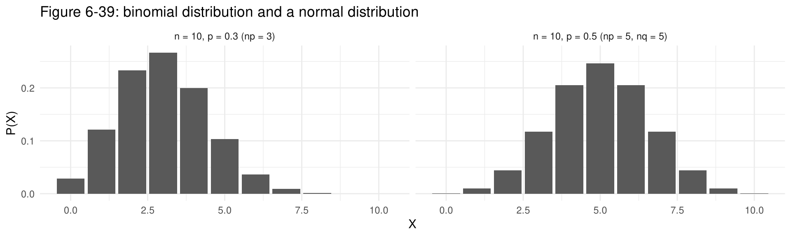
Correction for Continuity
Correction for Continuity
A correction for continuity is a correction employed when a continuous distribution is used to approximate a discrete distribution.
The continuity correction means that for any specific value of X, say 8, the boundaries of X in the binomial distribution (in this case 7.5 to 8.5) must be used. For P(X = 8) the correction is P(7.5 < X < 8.5); for P(X \leq 7) it is P(X < 7.5); for P(X \geq 3) it is P(X > 2.5).
Table 6-2
Table 6-2 Summary of the Normal Approximation to the Binomial Distribution
| When finding (binomial) | Use (normal) |
|---|---|
| 1. P(X = a) | P(a - 0.5 < X < a + 0.5) |
| 2. P(X \geq a) | P(X > a - 0.5) |
| 3. P(X > a) | P(X > a + 0.5) |
| 4. P(X \leq a) | P(X < a + 0.5) |
| 5. P(X < a) | P(X < a - 0.5) |
For all cases, \mu = n \cdot p, \sigma = \sqrt{n \cdot p \cdot q}, n \cdot p \geq 5 and n \cdot q \geq 5.
Procedure Table
Procedure for the Normal Approximation to the Binomial Distribution
Step 1 Check to see whether the normal approximation can be used.
Step 2 Find the mean \mu and the standard deviation \sigma.
Step 3 Write the problem in probability notation, using X.
Step 4 Rewrite the problem by using the continuity correction factor, and show the corresponding area under the normal distribution.
Step 5 Find the corresponding z values.
Step 6 Find the solution.
Example 6-16
Convenience-Store Pickup
On a cross-border e-commerce platform, 30\% of buyers choose convenience-store pickup instead of home delivery. If 150 buyers are selected at random, find the probability that exactly 52 of them choose convenience-store pickup. (hypothetical data)
Example 6-16
Solution
Here p = 0.30, q = 0.70 and n = 150.
Step 1 np = (150)(0.30) = 45 and nq = (150)(0.70) = 105. Since np \geq 5 and nq \geq 5, the normal distribution can be used.
Step 2 \mu = np = 45 and \sigma = \sqrt{npq} = \sqrt{(150)(0.30)(0.70)} = \sqrt{31.5} \approx 5.61
Step 3 P(X = 52)
Step 4 Using approximation 1 in Table 6-2: P(51.5 < X < 52.5) (Figure 6-40).
Step 5 z_1 = \dfrac{51.5 - 45}{5.61} \approx 1.16 and z_2 = \dfrac{52.5 - 45}{5.61} \approx 1.34
Step 6 The area between z_1 and z_2 is 0.0327, or about 3.27\%.
Example 6-16
Solution
Compute in R
np nq sigma
45.00 105.00 5.61 [1] 0.0327[1] 0.032The normal approximation gives 0.0327, and the exact binomial probability is 0.032.
Example 6-17
Returned Orders
Fifteen percent of the orders placed on an online marketplace are returned. If a random sample of 240 orders is selected, find the probability that 24 or more will be returned. (hypothetical data)
Example 6-17
Solution
Step 1 Here p = 0.15, q = 0.85 and n = 240. Since np = (240)(0.15) = 36 and nq = (240)(0.85) = 204, the normal approximation can be used.
Step 2 \mu = np = 36 and \sigma = \sqrt{npq} = \sqrt{(240)(0.15)(0.85)} = \sqrt{30.6} \approx 5.53
Step 3 P(X \geq 24)
Step 4 Using approximation 2 in Table 6-2: P(X > 24 - 0.5) = P(X > 23.5) (Figure 6-41).
Step 5 z = \dfrac{23.5 - 36}{5.53} \approx -2.26
Step 6 The area to the right of that z value is 0.9881, or 98.81\%.
Example 6-17
Solution
Compute in R
np nq sigma
36.00 204.00 5.53 [1] 0.9881[1] 0.991In a random sample of 240 orders the probability of 24 or more being returned is 98.81%; the exact binomial probability is 0.991.
Example 6-18
Mobile Wallet Payments
A recent in-store survey found that 45\% of shoppers at a department store pay with a mobile wallet. Find the probability that in a random sample of 120 shoppers, at most 48 will pay with a mobile wallet. (hypothetical data)
Example 6-18
Solution
Step 1 Here p = 0.45, q = 0.55 and n = 120, so np = 54 and nq = 66. Since both values are greater than or equal to 5, the normal approximation can be used.
Step 2 \mu = np = 54 and \sigma = \sqrt{npq} = \sqrt{(120)(0.45)(0.55)} \approx 5.45
Step 3 P(X \leq 48), which with the correction factor becomes P(X < 48 + 0.5) = P(X < 48.5) (Figure 6-42).
Step 4 z = \dfrac{48.5 - 54}{5.45} \approx -1.01
Step 5 The area to the left of that z value is 0.1564, or 15.64\%.
The probability that at most 48 of the 120 shoppers pay with a mobile wallet is 15.64%.
Example 6-18
Solution
Compute in R
np nq sigma
54.00 66.00 5.45 [1] 0.1564[1] 0.1564Example 6-19
Binomial versus Normal Approximation
When n = 12 and p = 0.5, use the binomial distribution table (Table A-2 in Appendix A) to find the probability that X = 8. Then use the normal approximation to find the probability that X = 8.
Example 6-19
Solution
From Table A-2, for n = 12, p = 0.5 and X = 8, the probability is 0.121.
For a normal approximation, \mu = np = (12)(0.5) = 6 and \sigma = \sqrt{npq} = \sqrt{(12)(0.5)(0.5)} = \sqrt{3} \approx 1.73.
Now X = 8 is represented by the boundaries 7.5 and 8.5, so
z_1 = \frac{7.5 - 6}{1.73} \approx 0.87 \qquad z_2 = \frac{8.5 - 6}{1.73} \approx 1.44
The area between these boundaries is 0.1188 — very close to the exact binomial probability 0.1208 (Figure 6-43).
Example 6-19
Solution
Compute in R
np nq sigma
6.00 6.00 1.73 [1] 0.1208[1] 0.1188Example 6-19
Caution
Here np = 6 and nq = 6 — only just above the minimum threshold of 5. The normal approximation may be less accurate for small n, yet 0.1188 is still close to the exact value 0.1208.
A normal distribution can also be used to approximate other distributions, such as the Poisson distribution (Table A-3 in Appendix A).
Important Terms
Chapter 6 Vocabulary
central limit theorem · correction for continuity · negatively or left-skewed distribution · normal distribution · positively or right-skewed distribution · sampling distribution of sample means · sampling error · standard error of the mean · standard normal distribution · symmetric distribution · z value (z score)
Key Formulas
The Normal Distribution
Equation of a normal distribution and of the standard normal distribution: y = \frac{e^{-(X-\mu)^2/(2\sigma^2)}}{\sigma\sqrt{2\pi}} \qquad\qquad y = \frac{e^{-z^2/2}}{\sqrt{2\pi}}
Formula for the z score (or standard score), and for finding a specific data value: z = \frac{X - \mu}{\sigma} \qquad\qquad X = z \cdot \sigma + \mu
Key Formulas
Sample Means and the Binomial Approximation
Mean of the sample means and standard error of the mean: \mu_{\bar{X}} = \mu \qquad\qquad \sigma_{\bar{X}} = \frac{\sigma}{\sqrt{n}}
z value for the central limit theorem, and the finite population correction factor: z = \frac{\bar{X} - \mu}{\sigma/\sqrt{n}} \qquad\qquad \sqrt{\frac{N-n}{N-1}}
Mean and standard deviation for the binomial distribution: \mu = n \cdot p \qquad\qquad \sigma = \sqrt{n \cdot p \cdot q}
Pearson coefficient of skewness: PC = \dfrac{3(\bar{X} - \text{median})}{s}
Key Takeaways
Key point
- A normal distribution is continuous, bell-shaped, unimodal and symmetric; mean, median and mode are equal, the total area is 1, and the curve never touches the x axis
- About 68\%, 95\% and 99.7\% of the area lies within 1, 2 and 3 standard deviations of the mean
- The standard normal distribution has \mu = 0, \sigma = 1; convert with z = \dfrac{X-\mu}{\sigma} and recover a data value with X = z\sigma + \mu
- Areas under the standard normal curve are probabilities; the distribution is continuous, so P(a \leq z \leq b) = P(a < z < b)
- Normality is checked with a histogram, Pearson’s index PC = \dfrac{3(\bar{X}-\text{median})}{s} (significant when PC \geq +1 or PC \leq -1), outliers, and a normal quantile plot
Key Takeaways
Key point
- A sampling distribution of sample means uses the means of all samples of a given size; \mu_{\bar{X}} = \mu and the standard error is \sigma_{\bar{X}} = \sigma/\sqrt{n}
- The central limit theorem: as n increases without limit, the distribution of sample means approaches normal — for any n if the population is normal, otherwise for n \geq 30
- The finite population correction factor \sqrt{\dfrac{N-n}{N-1}} is needed for a sample larger than 5\% of the population drawn without replacement
- The normal approximation to the binomial applies when np \geq 5 and nq \geq 5, with \mu = np and \sigma = \sqrt{npq}
- Always apply the correction for continuity (\pm 0.5) when a continuous distribution approximates a discrete one
Acknowledgement
Copyright notice. These teaching materials follow the organization and terminology of Bluman, A. G. (2023). Elementary statistics: A step by step approach (11th ed.). McGraw Hill. All rights in the original work are reserved by its authors and publishers.
Original examples. Every worked example, data set, and R script in these slides was written for this course. The data are hypothetical unless stated otherwise.
Non-commercial use only. These materials are strictly intended for educational purposes and must not be used for commercial gain or profit.
Proper attribution. Any reproduction, distribution, or use of these materials must provide proper attribution to the original source.

Elementary Statistics: A Step by Step Approach